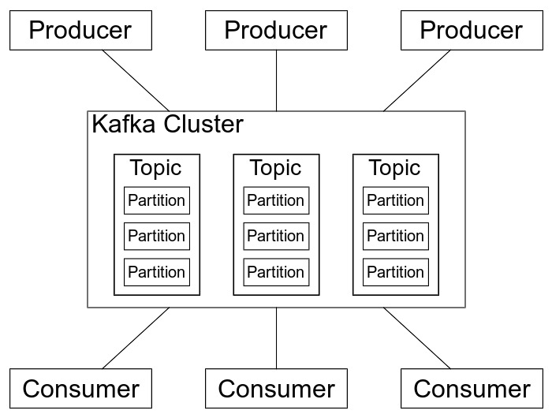
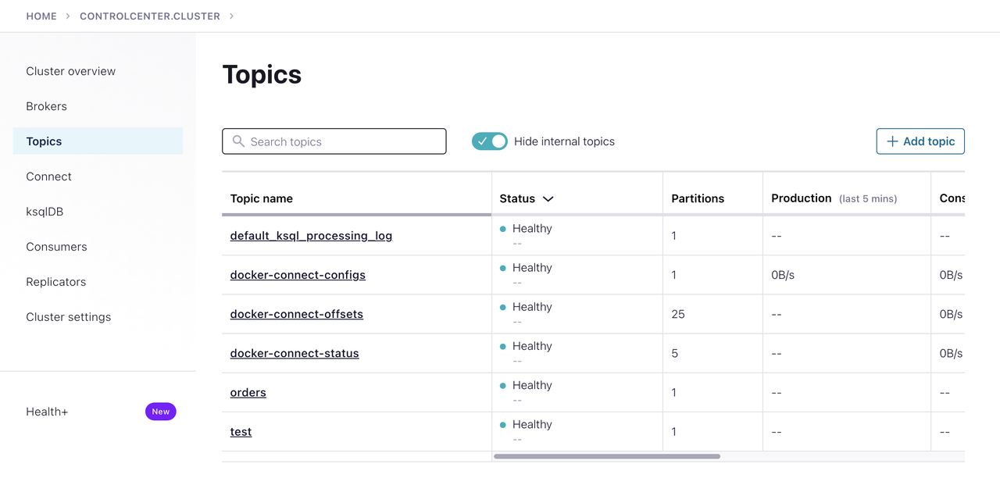

Hands-on Apache Kafka in 10 Minutes
A short hands-on guide to get started with Apache Kafka for people who are in a hurry.
In this guide, we will learn what is Apache Kafka, how to install and run it. We will also learn how to create/modify a topic and produce/consume messages from it.
What is Apache Kafka?

Apache Kafka1 is a distributed event store and streaming-processing platform. It is used to build real-time data pipelines and streaming apps. It is horizontally scalable, fault-tolerant, and has high throughput.
Kafka Terminology
Topic: A topic is a category or feed name to which records are published/consumed. It is configured with a set of key-value pairs called topic configuration.
Producer: A producer is a client that publishes records to the Kafka cluster. Producers write data to topics and partitions.
Consumer: A consumer is a client that subscribes to topics and processes the records. Consumers read data from topics and partitions.
Consumer Group: A consumer group is a group of consumers that share a common purpose. Consumer groups enable a pool of processes to divide the work of consuming and processing records.
Broker: A broker is a server that hosts a set of topics/partitions. It receives data from producers and sends data to consumers.
ZooKeeper: ZooKeeper is used to store the cluster configuration and the state of the cluster. All Kafka brokers connect to ZooKeeper.
Kraft: Kraft(Apache Kafka Raft) is a consensus protocol that is used to manage the metadata of the Kafka cluster. It is introduced to remove dependency on ZooKeeper.
Installing Apache Kafka
We can use cp-all-in-one2 docker compose files to run Apache Kafka locally. This image contains all the components of Confluent Platform including Apache Kafka, Apache Zookeeper, Confluent Schema Registry, Confluent REST Proxy, Confluent Control Center, and others.
$ git clone https://github.com/confluentinc/cp-all-in-one
$ cd cp-all-in-one/cp-all-in-one
$ docker-compose up
Confluent Control Center is a web UI to manage and monitor Apache Kafka.

We can visit it http://localhost:9021 and monitor the cluster from this UI.
Producing and Consuming Messages
Kafka stores messages in topics. A topic is a category or feed name to which messages are published/consumed.
Let us create a topic called test with kafka-topics command.
$ docker-compose exec broker kafka-topics --bootstrap-server localhost:9092 --topic test --create
This will create a topic called test with a single partition and a replication factor of 1. In multi-node cluster, we
can use --replication-factor, --partitions to specify the number of replicas/partitions for the topic.
$ docker-compose exec broker kafka-topics --bootstrap-server localhost:9092 --topic test --partitions 3 --replication-factor 2 --create --if-not-exists
To produce messages to a topic named test, we can use kafka-console-producer and add messages to the topic:
$ docker-compose exec broker kafka-console-producer --broker-list localhost:9092 --topic test >order received >order updated >order shipped >order delivered >{"status": "completed"}
To consume messages from the same topic:
$ docker-compose exec broker kafka-console-consumer --bootstrap-server localhost:9092 --topic test --from-beginning order received order updated order shipped order delivered {"status": "completed"}
Since we have not defined schema for the messages, Kafka will store the messages as byte arrays. We can explicitly define the schema for the messages using Confluent Schema Registry if required.
We can list all the topics in cluster using kafka-topics:
$ docker-compose exec broker kafka-topics --bootstrap-server localhost:9092 --list default_ksql_processing_log docker-connect-configs docker-connect-offsets docker-connect-status test
To show details of a topic:
$ docker-compose exec broker kafka-topics --bootstrap-server localhost:9092 --describe --topic test Topic: test TopicId: 7CckqkXsQXCNY0MNHYRv2w PartitionCount: 1 ReplicationFactor: 1 Configs: Topic: test Partition: 0 Leader: 1 Replicas: 1 Isr: 1 Offline:
By default all messages are stored in the topic for 7 days. We can change this retention period using retention.ms configuration:
$ docker-compose exec broker kafka-topics --bootstrap-server localhost:9092 --alter --topic test --config retention.ms=10000
To see all the available consumer groups, we can use kafka-consumer-groups:
$ docker-compose exec broker kafka-consumer-groups --bootstrap-server localhost:9092 --list
Kafka Rest Proxy
Kafka Rest Proxy3 is a RESTful interface to Apache Kafka. It provides a RESTful interface to produce and consume messages, view the state of the cluster, and perform administrative actions without using the native Kafka protocol or clients.
To produce messages to a test topic with curl:
$ curl -X POST -H "Content-Type: application/vnd.kafka.json.v2+json" \ --data '{"records":[{"value":{"status": "completed"}}]}' \ "http://localhost:8082/topics/test"
To consume messages from the same topic:
$ curl -X GET -H "Accept: application/vnd.kafka.json.v2+json" \ "http://localhost:8082/topics/test"
We can dynamically configure Kafka cluster settings as well.
To change log level of various components of Kafka cluster using Kafka Rest Proxy.
$ curl -X POST -H "Content-Type: application/vnd.kafka.v2+json" \ --data '{"log4j.logger.kafka.server":"DEBUG"}' \ "http://localhost:8082/config"
We can update the log level of various components of Kafka cluster and check the logs.
Conclusion
In this article, we have seen how to install Apache Kafka locally using Docker. We have also seen how to produce and consume messages using Kafka console commands and Kafka Rest Proxy.